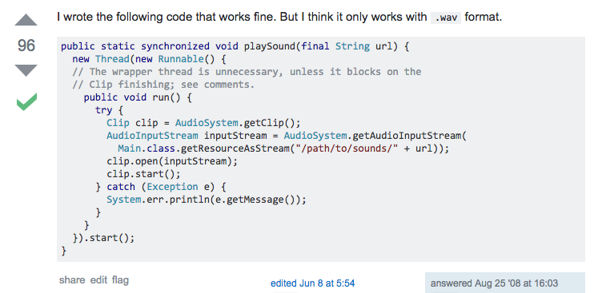
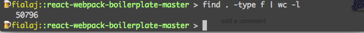
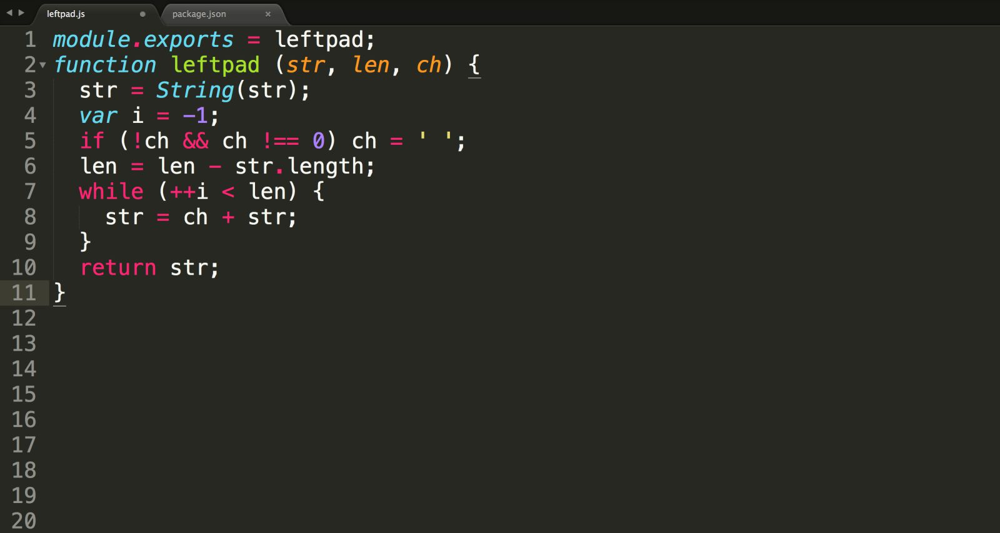

class: center, middle # How to <s>set up webpack, React and ES7+ transpilation for your 2-button website in under 3 weeks</s> survive Web Development in 2016. #### Jakub Fiala --- # Agenda 1. Intro 2. Why web dev? 3. The state of the art 4. The future ??? you don't need to understand everything I'm going to talk about this is just to give you an idea --- # Introduction + Wanted to study music production + Computer music is more fun + Went from *BMus Music Computing* to *MSci Creative Computing* + Interested in interactivity, experience and collaboration + Audiovisual programming on the Web ??? important to make the most out of uni find your own path and make something interesting --- # Work + [atrament](https://github.com/jakubfiala/atrament.js) – drawing library for the HTML Canvas + [Meyda](https://github.com/hughrawlinson/meyda) - real-time audio analysis on the Web + [CodeCircle](http://codecircle.com/) - collaborative coding platform + many more inc. music & digital art on [fiala.space](http://fiala.space) ??? demo some of the examples --- # Wellcome + [wellcome.ac.uk](http://wellcome.ac.uk) + global organisation funding and promoting health research + Wellcome Collection & Library + emerging interest in modern tech + lots of interesting data to be explored + entirely new development team --- # Wellcome + Senior Front-end Developer ??? show website my role is to develop public-facing web projects with focus on javascript, interactivity and data visualization --- class: center, middle # Why web dev? --- class: center, middle ## It's easy. ```javascript // play a sound let myAudio = new Audio(); myAudio.addEventListener('load', e => myAudio.play()); myAudio.src = '/audio/mySound.mp3'; ``` ??? high-level APIs simple syntax no compilation necessary --- class: center, middle  --- class: center, middle ## It's accessible. --- class: center, middle ??? truly cross-platform accessibility-ready available on demand easy to push updates --- class: center, middle ## It's fast. [Lightsaber Escape](https://www.chromeexperiments.com/experiment/lightsaber-escape) by Google/Unit9 ??? hardware acceleration optimized C++ under the hood getting faster all the time --- class: center, middle # The state of the art --- class: center, middle ### The good stuff # User Experience at the core --- class: center, middle ??? Natalie will talk more about what UX is the ease of developing web sites/apps makes it easier to focus on UX standing out amid millions of sites is all about UX --- class: center, middle ### The good stuff # Better JavaScript, more JavaScript ??? new standards, ES6,7 etc. client-heavy apps more control than heavy HTML --- class: center, middle ```javascript var xhr = new XMLHttpRequest(); xhr.open('GET', url); xhr.responseType = 'json'; xhr.onload = function() { console.log(xhr.response); }; xhr.onerror = function() { console.log("Booo"); }; xhr.send(); ``` ES5, Credit: Jake Archibald --- class: center, middle ```javascript (async() => { try { const response = await fetch(url); const data = await response.json(); console.log(data); } catch (e) { console.log("Booo") } })(); ``` ES7, Credit: Jake Archibald --- class: center, middle ### The good stuff # Reactivity --- class: center, middle <img class="image--small" src="img/react.jpg" /> <img class="image--small" src="img/websockets.png" /> ??? real-time communication and data sharing explain what each of the things is --- class: center, middle ### The good stuff # Community --- class: center, middle <img class="image--small" src="img/npm.png" /> <img class="image--small" src="img/gh.png" /> ??? lively, supportive community billions of code examples thousands of packages and tools --- class: center, middle # The bad stuff --- class: center, middle # BLOAT --- class: center, middle <pre class="smallpre"> ├── LICENSE ├── Procfile ├── app.json ├── client │ ├── components │ │ ├── Checkbox │ │ │ ├── CheckboxWithLabel.jsx │ │ │ └── CheckboxWithLabel.test.jsx │ │ ├── Index │ │ │ ├── Index.jsx │ │ │ └── Index.test.jsx │ │ └── NotFound │ │ ├── NotFound.jsx │ │ └── NotFound.test.jsx │ ├── main.jsx │ └── styles │ └── main.scss ├── index.js ├── package.json ├── readme.md ├── server │ └── views │ ├── index.ejs │ └── layout.ejs ├── webpack.config.base.js ├── webpack.config.development.js ├── webpack.config.js └── webpack.config.production.js <pre> ??? explain what the boilerplate is point out many file types point out this isn't how most websites start PLAY THE VIDEO --- class: center, middle  ??? PLAY THE VIDEO explain what's on the picture --- class: center, middle # Hype --- class: center, middle  --- class: center, middle # The Future <img src="http://i.giphy.com/l41lFj8afmWIo3yW4.gif" /> --- # Real Web applications + Offline use with `ServiceWorkers` + Media-heavy -> learn about DSP and graphics + Intelligent -> learn about machine intelligence --- # Functional programming + already massive hype + cleaner and less prone to bugs + less code ```javascript // imperative function double(arr) { let results = []; for (let i = 0; i < arr.length; i++){ results.push(arr[i] * 2); } return results; } // functional const double = arr => arr.map((item) => item * 2); ``` --- # Functional programming + stateless UI components ```javascript const UI = stateOfApp => component(stateOfApp); ``` + learn about Haskell, pure functions --- # JavaScript everywhere + server - [node.js](http://nodejs.org/) + embedded systems - [espruino](https://www.espruino.com/) + native apps - React Native, Cordova --- # Resources + [r/webdev](https://www.reddit.com/r/webdev/) + [css-tricks](https://css-tricks.com/) + [on functional JS](https://www.sitepoint.com/introduction-functional-javascript/) + [functional JS workshop](https://github.com/timoxley/functional-javascript-workshop) --- class: center # Thanks! twitter: [@fiala__](https://twitter.com/fiala__) mail: jakubfiala@me.com github: [jakubfiala](http://github.com/jakubfiala) [fiala.space](http://fiala.space)